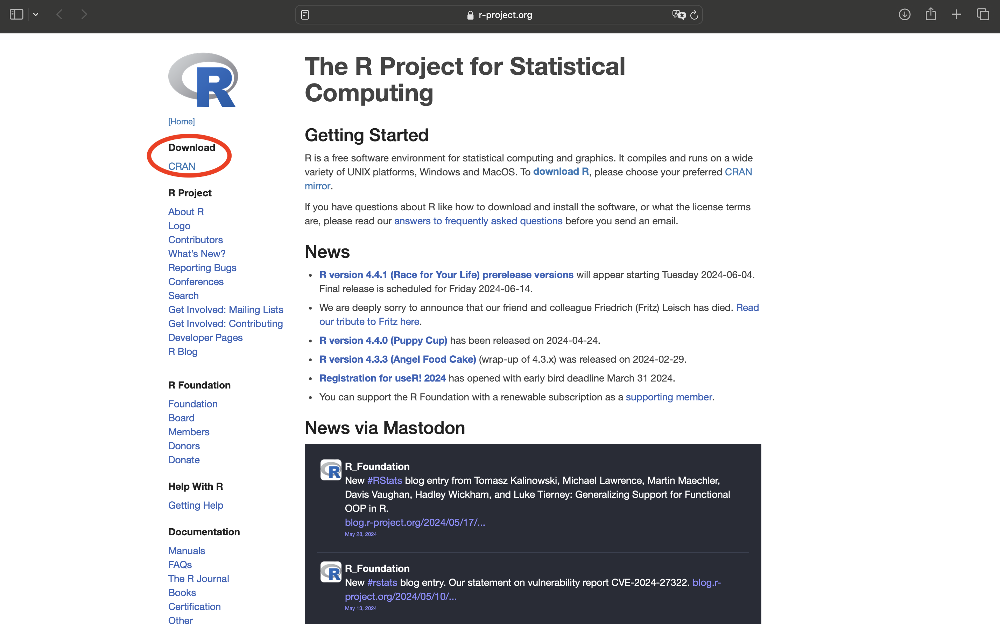
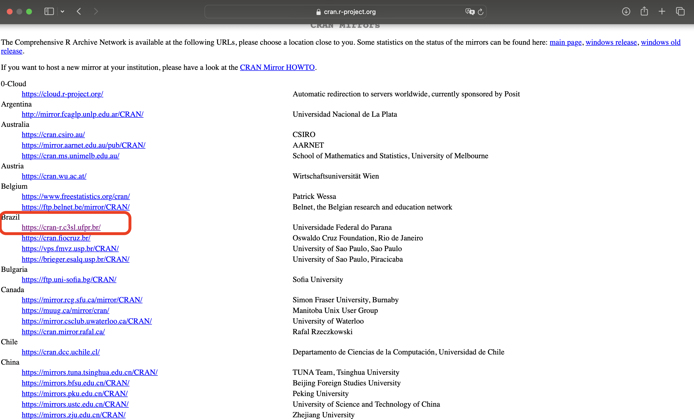
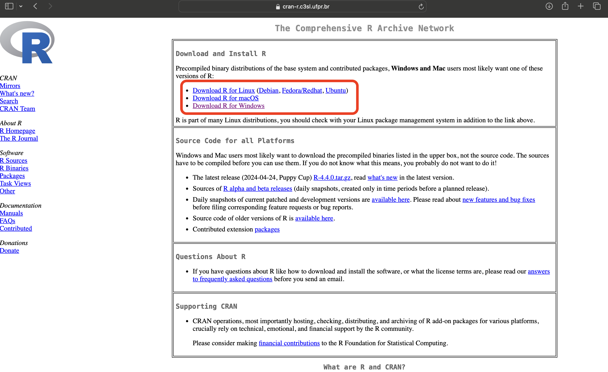
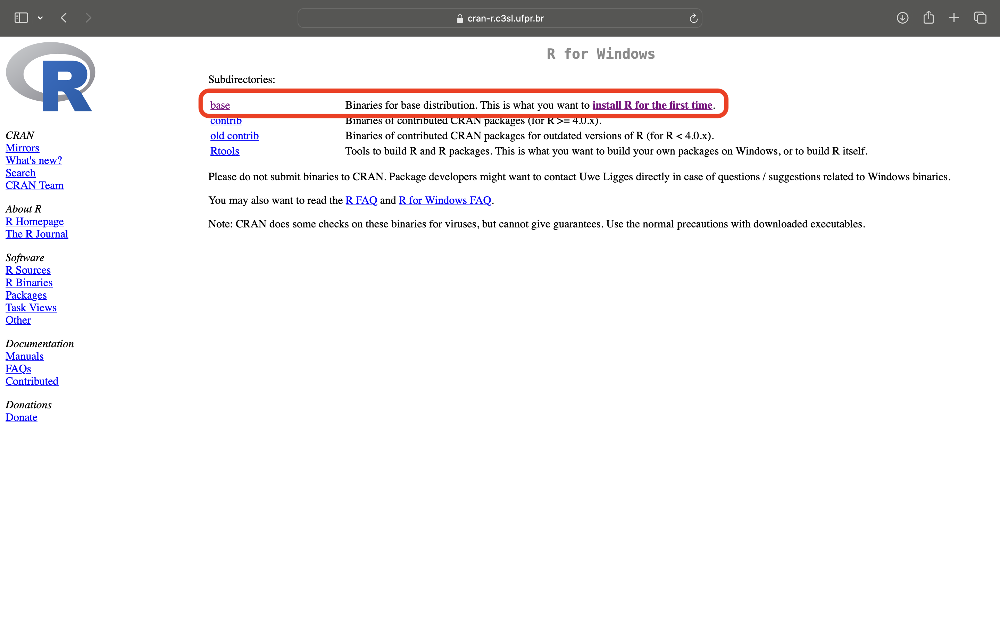
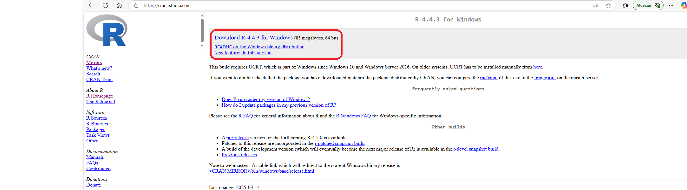
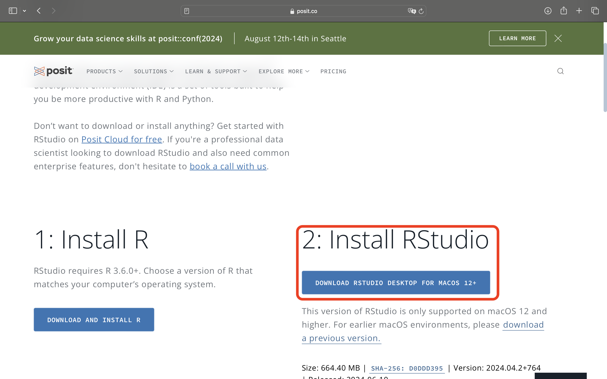
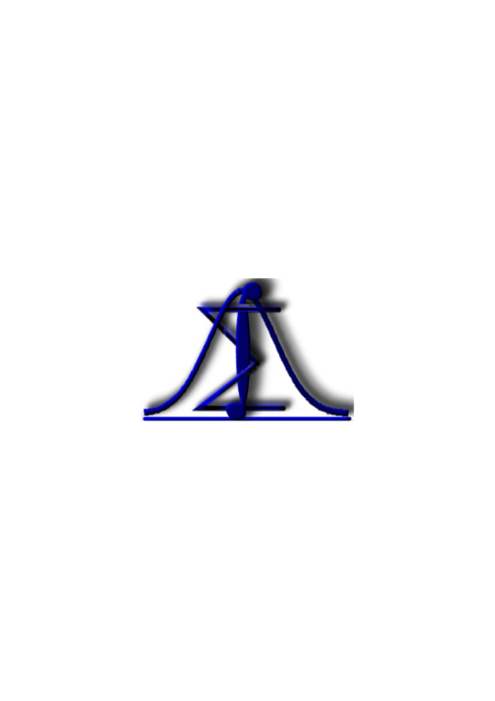

Professor: Guilherme Biz
Centro de Ciência Exatas - Depto de Estatística - Sala 17
Contato:
Telefone: 3371-4934 / 4346 \(\quad\) E-mail: gbiz@uel.br
Horário de atendimento:
Terças-feiras, das 14h00 às 16h45.
Cargar horária
| Teórica | Prática | Total |
|---|---|---|
| 30 | 15 | 45 |
Ementa
Introdução à estatística. Estatística Descritiva. Noções de Probabilidade. Variáveis Aleatórias e distribuições de probabilidades. Estimação por ponto e por intervalo de confiança. Testes de hipóteses.
Capacitar os alunos à:
Desenvolver conteúdos básicos de Estatística aplicados às Ciências Agrárias.
Interpretar dados agronômicos por meio de tabelas, gráficos e medidas descritivas.
Tomar decisões fundamentadas diante de incertezas relacionadas à Agronomia.
Introdução à estatística
Tabulação de dados
Tabelas e gráficos
Distribuição de frequências
Medidas de posição
Medidas de dispersão
Aulas teóricas expositivas com resolução de exercícios.
Uso do computador para a aplicação da teoria no programa R.
Serão realizadas duas avaliações (A) com peso 2 e listas de exercícios (E=médias das notas das listas) com peso 1, sendo a média final da disciplina calculada por meio da média ponderada.
\[ Média=\frac{2\times A_1+2\times A_2+E}{5} \]
Data das avaliações
| Turma | Prova 1 | Prova 2 | Exame |
|---|---|---|---|
| 1000 | 14/05/2025 | 16/07/2025 | 30/07/2025 |
| 2000 | 19/05/2025 | 21/07/2025 | 28/07/2025 |
ANDRADE, D. O.; OGLIARI, P. J. Estatística para as Ciências Agrárias e Biológicas: com Noções de Experimentação. 3ª ed. - Florianópolis: Ed da UFSC, 2017. 475p
BUSSAB, W. O.; MORETTIN, P.A. Estatística Básica. 10ª ed. São Paulo: Saraiva, 2023. 624p.
MONTGOMERY, D. C.; RUNGER, G. C. Estatística Aplicada e Probabilidade para Engenheiros. Rio de Janeiro: LTC, 2003.
Seja Y uma variável qualquer, com 7 observações:
\[ \textbf{ Y}=\{20;\ \ 20,3;\ \ 20,5;\ \ 22;\ \ 22,5;\ \ 19;\ \ 18,7\} \] Calcule (passo a passo):
Soma dos 5 primeiros valores: \(\sum_{i=1}^{5}y_i\);
Quadrado da soma: \((\sum_{i=1}^{7}y_i)^2\);
Soma de quadrados \(\sum_{i=1}^{7}y_i^2\);
Suponha a constante \(k=15\) e calcule: \(\sum_{i=1}^{7}k\ y_i\);
Soma dos desvios em relação a \(k\): \(\sum_{i=1}^{n} (y_i - k)\);
A média aritmética simples dos tempos: \(\bar{y} = \frac{ \sum_{i=1}^{n} y_i}{n}\);
Soma dos desvios em relação à média: \(\sum_{i=1}^{n} (y_i - \bar{y})\).
“Estatística é a arte e ciência de coletar, analisar e interpretar dados”
R. A. Fisher definiu a estatística como a matemática aplicada aos dados de observação.
“A estatística é uma ciência da tomada de decisão diante de incertezas”
Três tipos fundamentais de investigação estatística:
Pesquisas de opnião pública.
Experimentação.
Estudos observacionais.
As análises estatísticas dependem da forma como os dados são coletados, e o planejamento estatístico da pesquisa indica o esquema sob o qual os dados serão obtidos.
“O pensamento estatístico será um dia tão necessário para o cidadão quanto a habilidade de ler e escrever” (Well, H. G., 1993)
Economia: O padrão de vida no Brasil está mudando?
Literatura: O estilo do autor muda com a idade?
Meteorologia: O aquecimento global é uma realidade?
Medicina: Qual é o melhor medicamento?
Agronomia: Qual é a melhor variedade de milho?
Verificar o comportamento da produção de milho sob o efeito de diferentes doses de nitrogênio.
Na agricultura de precisão, como determinar a dosagem ideal de fertilizante?
Como determinar o valor de seguro agrícola?
Qual é a efetividade de um novo tratamento contra a infestação de percevejo?
Formular hipóteses
Avaliar informações existentes
Planejar mecanismo de coleta de dados
População: é o conjunto de todos os elementos (indivíduos) que possuam pelo menos uma característica comum.
Parâmetro: é uma medida numérica que descreve uma característica de uma população.
Amostra: é um subconjunto da população.
Estatística: é uma medida numérica que descreve uma característica de uma amostra.
Unidade Observável: é portador da(s) característica(s), ou propriedade(s), que deseja-se investigar.
Variável: é um atributo, mensurável ou não, sujeito à variação quantitativa ou qualitativa, no interior de uma população ou amostra.
Dados: são informações inerentes às variáveis que caracterizam os elementos que constituem a população ou a amostra em estudo.
Discreta
Contínua
Plano de amostragem: procedimento utilizado para selecionar a amostra.
Censo: tentativa de amostrar toda a população.
Vantagens da amostragem sobre o censo
Custo reduzido
Tempo
Aprofundamento na pesquisa
É um método de selecionar, sem reposição, \(n\) elementos de uma população, em que todo elemento da população tem probabilidade igual de ser escolhido para a amostra.
Utilização: utiliza-se este tipo de amostragem quando a população pode ser considerada homogênea.
Os elementos são escolhidos utilizando-se algum tipo de sistema. Para o processo de coleta, divide-se o tamanho da população pelo tamanho da amostra, obtendo-se o “salto”. \[s=\frac{N}{n}\] Sorteia-se um número entre 1 e \(s\). A partir daí, basta ir somando \(s\) à posição do elemento retirado.
É um tipo de amostragem realizado quando a população for heterogênea. Para obter-se uma amostra é preciso dividir a população em grupos de elementos homogêneos, chamados de estratos e, nestes estratos, sortear seus elementos.
Utilização:utiliza-se este tipo de amostragem quando a população é heterogênea.
É o tipo de amostragem em que o pesquisador seleciona os membros da população dos quais é mais fácil obter informações.
Bastante utilizado na área de marketing.
É importante o senso crítico do pesquisador para evitar vieses.
Este tipo de amostragem assemelha-se, numa fase inicial, com a amostragem estratificada proporcional. A população é dividida em grupo e, seleciona-se, para fazer parte amostral, uma quota de cada grupo, proporcional a seu tamanho.
Muito utilizado em prévias eleitorais.
Amostragem não probabilística, geralmente é influenciada por tendência, preferências e fatores subjetivos pessoais diversos.
A determinação do tamanho da amostra depende de alguns fatores:
Tamanho da população: finita (\(N\)) ou infinita.
Variância ou percentual: dependendo do tipo de pesquisa, usa-se a variância ou a percentagem.
Nível de confiança: probabilidade de acerto, geralmente 95% ou 99%.
Informações na literatura: Informações sobre \(\pi\) ou sobre \(\sigma^2\).
Erro de amostragem ou precisão: margem de erro.
Quando se dispõe de variáveis qualitativas, utiliza-se a seguinte formula: \[ n_0=\frac{z^2\pi(1-\pi)}{(\pi-p)^2}=\frac{z^2\pi(1-\pi)}{\epsilon^2},\] para população infinita, em que \(\epsilon\)= erro de precisão, \(\pi\)= valores obtidos em trabalhos anteriores, \(z\)= nível de confiança e \(n_0\)= amostra inicial.
Quando se dispoe de variáveis quantitativas, utiliza-se a seguinte formula: \[ n_0=\frac{z^2\sigma^2}{\epsilon^2},\] para população infinita, em que \(\sigma^2\)= valores obtidos em trabalhos anteriores.
OBS:Em ambos os casos, se a população é finita deve-se utilizar também a equação: \[n=\frac{n_0}{1+\frac{n_0}{N}}.\]
R é uma linguagem e ambiente para computação estatística e gráfica.
O R é um sistema desenvolvido a partir da linguagem S, que tem suas origens nos laboratórios da AT&T no final dos anos 1980. Posteriormente o S foi vendido e deu origem a uma versão comercial, o S-Plus.
Em 1995 dois professores (Robert Gentleman e Ross Ihaka) da Universidade de Auckland, na Nova Zelândia, iniciaram o “Projeto R” (porque R vem depois de S), com o intuito de desenvolver um programa estatístico poderoso baseado na linguagem S, e de domínio público. O R pode ser baixado gratuitamente em https://www.r-project.org.
Sendo um Software Livre, os códigos fontes do R estão disponíveis e atualmente são gerenciados por um grupo chamado o Core Development Team https://www.r-project.org/contributors.html. A vantagem de ter o código aberto é que falhas podem ser detectadas e corrigidas rapidamente e atualizações para Softwares Livres podem ser disponibilizadas em uma questão de dias.
R é fornecido como um programa com interface de linhas de comando, que é o preferido por usuários experientes porque permite controle direto nos cálculos e é flexível.
O aprendizado para interface de linha de comandos é mais longa do que com interface gráfica, mas é reconhecida como um esforço recompensável e leva a melhoras práticas (melhor compreensão do plano de análise; comandos facilmente salvos e substituídos e mantém uma rastreabilidade das edições realizadas).
A interface com o usuário é a maior diferença entre o R e S-PLUS e outros programas de análise. Há diversas iniciativas de interfaces gráficas para o R, mas a maioria dos desenvolvedores dessas interfaces declara que essas são para familiarização da linguagem para o iniciante e provavelmente por isso nenhuma delas é completa
Acessar o site https://www.r-project.org e clicar em CRAN.
Escolher um servidor. Hoje no Brasil existem três servidores.
Escolher a versão de download que seja compatível com seu sistema operacional. Neste caso “Download R for Windows”.
Clique em “Install R for the first time’’.
Clique em “Download R 4.4.3 for Windows’’.
Acessar o site https://www.r-project.org e clicar em CRAN.
Escolher um servidor
Escolher o sistema operacional
Clique em “install R for the first time”.
Download R 4.4.3 for Windows
Para fazer o download do Rstudio acesse o site: https://posit.co/download/rstudio-desktop/
Uma opção é a versão online. Site: https://posit.cloud
Download RStudio
RStudio Cloud
Para detalhes sobre a licença do R.
Para saber como citar o R.
Para ter demostranções no R.
Pedindo ajuda no R.
